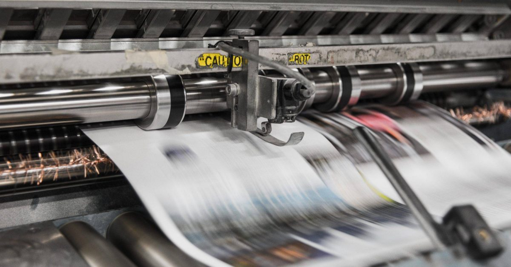

<!DOCTYPE html>
<html lang="hu"></html>
    <head>
        <meta charset="UTF-8">
    <meta name="viewport" content="width=device-width, initial-scale=01.0">
    <meta http-equiv="X-UA-Compatible" content="ie=edge">
    <link rel="stylesheet" href="https://stackpath.bootstrapcdn.com/bootstrap/4.3.1/css/bootstrap.min.css" integrity="sha384-ggOyR0iXCbMQv3Xipma34MD+dH/1fQ784/j6cY/iJTQUOhcWr7x9JvoRxT2MZw1T" crossorigin="anonymous">
    <link rel="stylesheet" href="style.css">
    <title>Szóbeli tételek</title>
    </head>
    <body>
        <div class="container">
        <nav class="navbar navbar-expand-md navbar-light sticky-top">
            <button class="navbar-toggler" type="button" data-toggle="collapse" data-target="#navbarNav" aria-controls="navbarNav" aria-expanded="false" aria-label="Toggle navigation">
              <span class="navbar-toggler-icon"></span>
            </button>
            <div class="collapse navbar-collapse justify-content-center" id="navbarNav">
              <ul class="navbar-nav">
                <li class="nav-item">
                 <a class="nav-link" href="Érettségi.html">Gyakorlati vizsga javítókulcs</a>
             </li>
             <li class="nav-item">
                <a class="nav-link" href="http://dload.oktatas.educatio.hu/erettsegi/feladatok_2019tavasz_emelt/e_inf_19maj_fl.pdf">Gyakorló feladat</a>
             </li>
             <li class="nav-item">
                <a class="nav-link" href="https://www.w3schools.com/html/">A gyakorlati vizsgához való segítség</a>
             </li>
            </ul>
        </div>
    </nav>
    <p class="mgit"><h2>A számítógép felépítése</h2></p>
    
    <p>A számítógép teljesítményét alapvetően a <a class="vastag">CPU</a> és belső busz sebessége (a belső kommunikáció sebessége),
        a RAM mérete és típusa, a merevlemez sebessége és kapacitása határozza meg. A gyakorlatban a CPU és a
        memória az alaplapon helyezkedik el. Az alaplap egy többrétegű nyomtatott áramköri lap, amelyen
        különbözp méretű és alakú csatlakozók helyezkednek el, melyek biztosítják az összeköttetést a
        hardvereszközök és a processzor között.</p>
     <p class="inf">Központi vezérlőegység: </p>
        <p>A számítógép agya a központi vezérlőegység (CPU: Central Precessing Unit). Két fő része a vezérlőegység
        (CU: Control Unit), ami a memóriában tárolt program dekódolását és végrehajtását végzi, valamint az aritmetikai
        és <a class="vastag">logikai egység (ALU: Arithmetical and Logical Unit)</a>, ami a számítási és logikai műveletek eredményének
        kiszámításáért felelős. A központi vezérlőegységet processzornak is nevezzük. Feladata a gép irányítása,
        a feldolgozási folyamatok vezérlése, az adatok feldolgozása, számítások elvégzése, a memóriában tárolt
        parancsok kiolvasása és végrehajtása, illetve az adatforgalom vezérlése. Az utasítások végrehajtásához
        a CPU átmeneti tárolóhelyeket, úgynevezett regisztereket használ, amelyek gyorsabban elérhetőek, mint
        a memória. A CPU-t sínrendszer köti össze a memóriával és a perifériavezérlőkkel. Megkülönböztetünk 
        cím-, adat-, valamint vezérlősíneket. A vezérlősínen jelenik meg az órajel, amely a processzor
        ütemezéséhez használt jelforrás. Az egyes utasítások végrehajtására előre meghatározott számú óraütés
        áll rendelkezésre, a processzor csak hiba esetén figyel a tényleges végrehajtás befejezésére. A CPU
        sebességét megahertzben (Mhz) mérik. Az áramköröket vezérlő órajel frekvenciája a processzor
        sebességének mérőszáma. Ha az órajel például 300 Mhz, akkor a processzor 300 millió műveleti
        ciklust végezhet el másodpercenként. A mai személyi számítógépek többségében az – eredetileg
        az Intel által kifejlesztett – x86-os (286, 386, stb.) elvek alapján működő processzorokat
        találunk.</p>
        
    <p class="inf">Memória:</p> A memória elektronikus adattárolást valósít meg. A számítógép csak olyan műveletek elvégzésére és csak
         <p>olyan adatok feldolgozására képes, melyek a memóriájában vannak. Az információ tárolása a kettes 
         számrendszerben történik. A memória fontosabb típusai <a class="vastag"> RAM, ROM, PROM, EPROM, EEPROM és a FLASH</a> memória.</p>
            
    <p>A <a class="vastag">RAM (Random Acces Memory)</a> véletlen elérésű írható és olvasható memória. A RAM az a memóriaterület, ahol
        a processzor a számítógéppel végzett munka során dolgozik. Ennek a memóriának a tartalmát tetszőleges
        sorrendben és időközönként kiolvashatjuk vagy megváltoztathatjuk. A RAM-ot más néven operatív tárnak
         is nevezzük. Minden bevitt adat először a RAM-ba íródik, és ott kerül feldolgozásra. Itt helyezkednek 
         el és ezen a területen dolgoznak az aktuálisan működő programok is. A RAM azonban nem alkalmas adataink
          huzamosabb ideig való tárolására, mert működéséhez folyamatos áramellátásra van szükség.</p>
    <p>A RAM-nak két fajtája van: a statikus és a dinamikus. A statikus <a class="vastag">RAM-ok (SRAM)</a> belsőleg hasonló áramköröket
        használnak. Ezeknek a memóriáknak az a tulajdonságuk, hogy a tartalmuk addig tárolódik, amíg tápellátást
        biztosítunk. A statikus RAM-ok nagyon gyorsak és nem igényelnek frissítést sem. A tipikus elérési idejük 
        néhány nanoszekundum. Emiatt a statikus RAM-ok jól használhatók cache memóriaként. A dinamikus <a class="vastag">RAM (DRAM) </a>
        egy bitcella tömb, minden cellában egy tranzisztorral és egy kicsi kapacitással. A kapacitásokat fel lehet
        tölteni, ezzel két eltérő állapotot tudunk biztosítani a 0 és 1 tárolására. A dinamikus RAM-oknál
        ciklikusan ki kell olvasni az egyes bitcellák tartalmát és vissza kell írni. Ezt a frissítést 200-500 
        alkalommal kell megismételni. Ezt a folyamatot a dinamikus RAM-ok frissítésének nevezzük. Mivel a
        dinamikus RAM-oknak csak egy tranzisztor és egy kapacitás kell bitenként, a dinamikus RAM-ok
        kialakításakor sokkal nagyobb sűrűséget érhetnek el chippenként. Többféle dinamikus RAM létezik.
        A legrégibb típus az <a class="vastag">FPM DRAM </a>.</p>
    <p class="tigris">Belsőleg bitek mátrixaként szervezett tömb, melyben külön címezzük a sort és az oszlopot és a megfelelő
        késleltetés után a bitmátrix adott cellájának tartalmát megkapjuk a kimeneten. Az <a class="vastag">EDO DRAM</a> megengedi
        a második memóriahivatkozás elkezdését mielőtt még az előző eredménye megjelenne a kimeneten. Mind az
        <a class="vastag">FPM</a> mind az <a class="vastag">EDO</a> chipek aszinkronok, ami azt jelenti, hogy a cím és az adatvonal nem ugyanazzal az
        órajellel működik. Ezzel szemben az <a class="vastag">SD RAM</a> hibridje a statikus és a dinamikus RAM-nak és egy órajel
        alatt végzi mindkét műveletet. A <a class="vastag">PROM</a> ugyanolyan mint a ROM azzal a különbséggel, hogy felhasználó
        írhatja be a tartalmát egyszerre. E vonalban a következő találmány az <a class="vastag">EPROM</a> volt, amit nem csak
        írni, hanem törölni is lehetett. Itt a chip egy kvarcablakon keresztül pár percig tartó erős
        ultraviola sugárzás hatására minden bitet 1-be állít és a beprogramozást ismét el lehet végezni.
        Az EPROM-nál még fejlettebb az EEPROM, amit impulzusokkal lehet törölni ahelyett, hogy be kelljen
        tenni egy speciális kamrába és ultraviola sugárzásnak kelljen kitenni. Ráadásul az EEPROM-ot 
        helyben lehet programozni, míg az EPROM-ot csak egy külön erre kifejlesztett EPROM-programozó készülékkel.
        Az EEPROM-ok nem vehetik fel a versenyt a DRAM-okkal vagy az SRAM-okkal, mert azoknál 10-szer lassabbak és
        100-szor kisebb kapacitásúak, ráadásul többe is kerülnek. Általában akkor használják őket mikor a feszültség
        nélküli tároló tulajdonságuk elengedhetetlen, illetve a fejlesztés során a még nem végleges állapotot
        tesztelik. De ezekkel a tárolókkal találkozunk a gyorsan változó szabványoknak és protokolloknak
        köszönhetően a készülékek többségében. A szervizekben egy erre alkalmas berendezéssel az újraprogramozás
        elvégezhető</p>


        <p class="mgit"><h2>Nyomtatók</h2></p>
        
        <p>A számítógéphez kapcsolható nyomtatóknak (printereknek) <a class="vastag">sok fajtája létezik</a>, de a legelterjedtebbek a
        mátrix-, a lézer- és a tintasugaras printerek. Több adattal jellemezhetők: felbontás, nyomtatási sebesség,
        színkezelés, környezetvédelmi szempontok stb. A felbontás mértékegysége a dpi (dots per inch, azaz a
        hüvelykenkénti festékpontok száma). A sebesség mérésére a lap/perc mérőszámot használják.</p>
        <p class="inf">Mátrixnyomtatók</p>
        <p>A mátrixnyomtatók írófeje több (általában 9 vagy 24), egymás felett elhelyezkedő, <a class="vastag">apró tűből áll.</a> Működés
        közben a fej adott sebességgel halad el a <a class="vastag">festékes szalag előtt.</a> Amikor karakter kirajzolása szükséges, a
        tűkre <a class="vastag">kalapácsok ütnek rá</a> és a tűk a festékes szalagon keresztül <a class="vastag">nyomot hagynak a papíron.</a> Színes kivitelben
        is gyártják. Hátránya a <a class="vastag">gyenge nyomatminőség</a>, a viszonylagos lassúság és a nagy zaj. Előnye viszont az, hogy
        egyedül ez a típus alkalmas egyszerre több példány átütésére <a class="vastag">(másolatkészítésre)</a>.</p>
       
         
        <p class="inf">Lézeres nyomtatók</p>
        <p>A lézerprinterek esetén a nyomtatandó mintát lézersugár rajzolja fel egy <a class="vastag">szelénhengerre.</a> A rajzolat
        elektromos töltése utasítja a festékport, hogy mely részleteknek kell fedetteknek lenniük. A festék azután 
        erről a szelénhengerről kerül át a papírra, és ott egy <a class="vastag">fűtőhenger rögzíti.</a> Nagy előnyük a <a class="vastag">kiváló nyomtatási 
        minőség</a> (300-1200 dpi) és a nagy sebesség. A működési elvből adódóan oldalorientált elven működik, azaz nem
        soronkét, hanem <a class="vastag">egy teljes oldalt nyomtat</a>. Ezért <a class="vastag">saját memóriával kell rendelkeznie.</a> Színes lézernyomtatók
        is léteznek, ezeknél a színes kép cián, bíbor, sárga és fekete komponensekből áll össze (CMYK technika).
        Elméletileg a három alapszín keveréséből feketének kellene lenni, a valóságban azonban piszkosszürke színt
        kapunk, ezért van szükség a külön fekete alkalmazására. Minthogy a színes lézerprinterek gyakorlatilag négy
        egyszínű printerből állnak, áruk is ennek megfelelő.</p>
        
        <p class="inf">Tintasugaras nyomtatók</p>
        <p>A tintasugaras nyomtatók úgy állítják elő a nyomatot, hogy a <a class="vastag">folyékony festéket apró lyukakon</a>, fúvókákon 
        keresztül juttatják a papírra. Az elv azonos, de a festékcseppek képzésében az egyes gyártók között 
        különbségek vannak. Az egyik módszer a <a class="vastag">bubble jet technológia</a>, ahol a tintát egy buborék löki ki, amit <a class="vastag">membrán
        mozgat.</a> A módszer hátránya, hogy – mivel a gázok összenyomhatók – a buborék nagysága nem szabályozható elég 
        finoman. A másik a <a class="vastag">piezo-technológia</a>, ami azt a tényt használja ki, hogy <a class="vastag">a kristályok feszültség hatására 
        megváltoztatják méretüket.</a> Ez a méretváltozás arra éppen elegendő, hogy a tintacseppet elő lehessen állítani.
        A harmadik módszer a <a class="vastag">thermal ink jet technológia</a>, amelynél már nem mechanikus, hanem termikus úton juttatják 
        a tintát a papírra. A fúvóka egy fűtőellenállás, s a gyors fűtés hatására a képződő tintacsepp kilövell a 
        fúvókából. Többszínű nyomtatás esetén a tintasugaras nyomtatóknál is a <a class="vastag">CMYK keverést alkalmazzák.</a> Előnyük a 
        halk működés, a lassan lézerprinterekével vetekedő nyomtatási minőség és az egyre fokozódó nyomtatási 
        sebesség.</p>
        
        <p class="tigris">A papíron való megjelenítés speciális eszköze a <a class="vastag">plotter vagy rajzgép.</a> Arra használatos, hogy a számítógépen 
        készült rajzokat kinyomtassuk. Általában speciális filctollakkal, tuskihúzókkal, újabban tintasugaras 
        patronokkal dolgozik. Különböző méretekben készül, a kisebb méretűek lapos felületen rajzolnak, a nagyobbak 
        (egészen A0 méretig) ún. dobplotter kivitelűek.</p>
    </div>
</body>